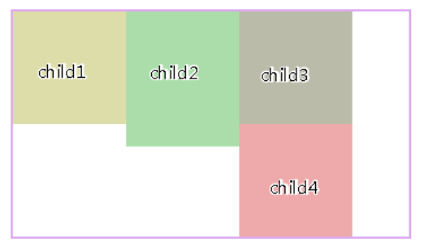
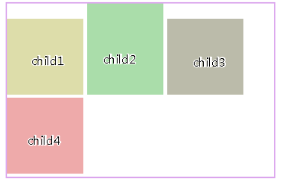
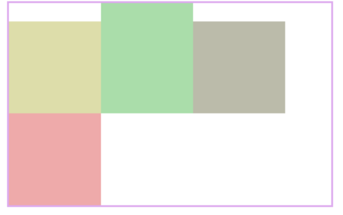

xxxxxxxxxx21box-shadow:[inset/指定为内阴影] 0px 0px 5px [10px] #000;2/*参数分别为x偏移量，y偏移量，模糊程度，阴影扩展长度，颜色*/xxxxxxxxxx161/*这样可以分别设置四个方向的圆角*/2/*3 两个值分别为水平或垂直半径4 第一个值是水平半径。5 如果第二个值省略，则它等于第一个值，这时这个角就是一个四分之一圆角。6 如果任意一个值为0，则这个角是矩形，不会是圆的。7 值不允许是负值。8*/9border-top-left-radius: <length> <length>;10border-top-right-radius11border-bottom-left-radius12border-bottom-right-radius13/*也可以全局设置*/14border-radius: 20px;15
16
inline（行内元素）:
block（块级元素）:
inline-block（融合行内于块级）:
对元素设置display：inline-block ，元素不会脱离文本流，而float就会使得元素脱离文本流，且还有父元素高度坍塌的效果
浮动布局不太好的地方：参差不齐的现象

inline-block存在的小问题：可以看到用了display:inline-block后，存在间隙问题，间隙为4像素，这个问题产生的原因是换行引起的，因为我们写标签时通常会在标签结束符后顺手打个回车，而回车会产生回车符，回车符相当于空白符，通常情况下，多个连续的空白符会合并成一个空白符，而产生“空白间隙”的真正原因就是这个让我们并不怎么注意的空白符。

去除空隙的方法：对父元素添加，{font-size:0}，即将字体大小设为0，那么那个空白符也变成0px，从而消除空隙

display：inline-block的布局方式和浮动的布局方式，究竟使用哪个，我觉得应该根据实际情况来决定的：
对于横向排列东西来说，我更倾向与使用inline-block来布局，因为这样清晰，也不用再像浮动那样清除浮动，害怕布局混乱等等。
对于浮动布局就用于需要文字环绕的时候，毕竟这才是浮动真正的用武之地，水平排列的是就交给inline-block了。
object-fit具体有5个值：
xxxxxxxxxx51.fill { object-fit: fill; }2.contain { object-fit: contain; }3.cover { object-fit: cover; }4.none { object-fit: none; }5.scale-down { object-fit: scale-down; }每个属性值的具体含义如下：(显示的是center部分)